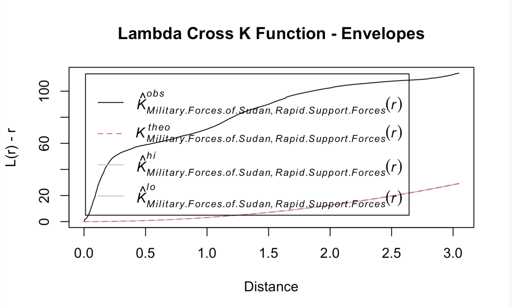
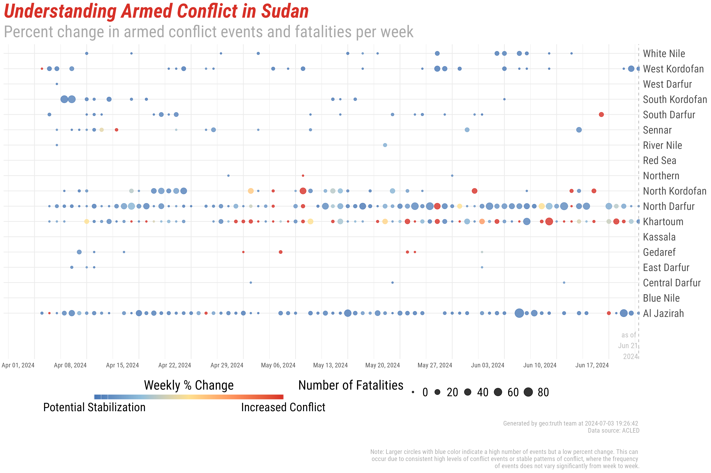

Since April 2023, Sudan has been engulfed in a conflict marked by escalating violence and humanitarian crises. This report utilizes data from the Armed Conflict Location & Event Data Project (ACLED) to provide a comprehensive understanding of the ongoing war, focusing on the actors involved, their strategies, and the spatial dynamics of the conflict.
The conflict in Sudan involves multiple actors with diverse agendas, including government forces, rebel groups, and ethnic militias. ACLED data reveals that government forces have primarily engaged in offensive operations to regain control over rebel-held territories in regions such as Darfur and South Kordofan. Rebel groups, on the other hand, have employed guerrilla tactics and targeted attacks on government installations and military convoys.
Ethnic militias have also played a significant role, often exacerbating violence against civilians aligned with opposing groups. This dynamic has led to widespread displacement and humanitarian suffering, particularly among vulnerable populations.
Spatial analysis of ACLED data illustrates the geographic spread of violence across Sudan. Conflict hotspots are concentrated in border regions and resource-rich areas where competition over land and natural resources is intense. For instance, clashes between government forces and rebel groups have been prevalent in Darfur, where historical grievances and ethnic tensions have fueled prolonged conflict.
Moreover, the expansion of violence into urban centers such as Khartoum underscores the evolving nature of the conflict, posing challenges for civilian protection and humanitarian access. The spatial distribution of violence highlights the need for targeted interventions and localized peacebuilding efforts to mitigate the impact on affected communities.
We performed a lambda cross k function analysis to examine the spatial distribution of conflict events over different distances. This analysis helps us understand if there is clustering, dispersion, or randomness in the distribution of conflict events.
The objective of this analysis is to investigate the spatial interaction between two types of actors involved in the conflict: “Military Forces of Sudan” and “Rapid Support Forces.” We use the Lambda Cross K Function to determine whether these actors exhibit spatial clustering or dispersion at various distances.
We begin by extracting the coordinates of events and creating a spatial window for the study area. A point pattern object (ppp) is then created with the coordinates and the actor types as marks.

The plot produced by the updated code provides insights into the spatial relationship between two types of actors: “Military Forces of Sudan” and “Rapid Support Forces.”
L(r) - r: This is the transformed K function, where L(r) is the univariate L function, and r is the distance. This transformation helps in visualizing the deviations from the Poisson process more clearly.
Distance (x-axis): The horizontal axis represents the distance (r) between points in the spatial pattern.
L(r) - r (y-axis): The vertical axis represents the transformed K function values.
Lines:
The solid black line represents the observed L function values for the interaction between “Military Forces of Sudan” and “Rapid Support Forces.”
The dashed lines represent the L function values under different edge corrections (if any were used). The blue dash-dotted line represents the theoretical L function under complete spatial randomness (CSR). Interpretation Spatial Interaction:
If the observed L function (solid black line) is above the theoretical L function (blue dash-dotted line), it suggests that the two types of actors are exhibiting spatial clustering at those distances. This means events involving these actors are more likely to occur close to each other than would be expected under CSR. If the observed L function is below the theoretical L function, it indicates spatial dispersion, suggesting that events involving these actors are more spread out than would be expected under CSR. Distance Scale:
At short distances (close to 0 on the x-axis), the observed L function is above the theoretical L function, indicating strong clustering between the “Military Forces of Sudan” and “Rapid Support Forces” at small distances. As the distance increases, the observed L function continues to stay above the theoretical line, indicating that clustering persists over a range of distances. Confidence Envelopes (Optional) The confidence envelopes provide a measure of the variability in the observed pattern compared to the expected pattern under CSR. They are calculated by simulating point patterns under the null hypothesis of CSR and provide upper and lower bounds (envelopes) for the L function.
Spatial Interaction:
Distance Scale:
At short distances (close to 0 on the x-axis), the observed L function shows strong clustering between the two actor types.
As the distance increases, the clustering persists, suggesting that events involving these actors are consistently clustered over a range of distances.
Plotting Confidence Envelopes:
The solid black line represents the observed L function.
The shaded area represents the range of L function values obtained from the simulations.
If the observed L function falls outside the shaded area, it indicates significant deviation from CSR, suggesting strong evidence of clustering or dispersion.
The plot shows that there is a significant clustering between events involving the “Military Forces of Sudan” and the “Rapid Support Forces.” This clustering persists across a range of distances, indicating that these two types of actors tend to have events that occur closer to each other than would be expected by chance. This finding can be crucial for understanding the spatial dynamics of the conflict and the interactions between these two groups.
This interpretation can be included in your report to provide insights into the spatial relationship between the two types of actors in your study area.
Findings: The lambda cross k function analysis indicates that conflict events are significantly clustered at certain distances, suggesting intense localized violence in specific areas.
We generated correlograms using Moran’s I and Geary’s C statistics to assess spatial autocorrelation at different distance intervals.


Findings: Both Moran’s I and Geary’s C correlograms reveal significant spatial autocorrelation, indicating that conflict events are not randomly distributed but tend to cluster together, especially at shorter distances.
To visualize changes in armed conflict events, we created a heat map showing the 15-day percent change in conflict intensity across Sudan.

Findings: The heat map reveals areas with significant increases or decreases in conflict intensity over a 15-day period. Regions with increased conflict are highlighted in red, indicating a need for urgent intervention, while areas with decreased conflict are shown in blue, suggesting potential stabilization.
In conclusion, the conflict in Sudan remains a humanitarian crisis with profound implications for regional stability and global security. ACLED data provides critical insights into the dynamics of violence, offering a nuanced understanding of the actors involved, their strategies, and the spatial distribution of conflict. Addressing the root causes of conflict and promoting inclusive peacebuilding efforts are essential for achieving sustainable peace and preventing further atrocities in Sudan.
Armed Conflict Location & Event Data Project (ACLED). (2024). Retrieved from [ACLED Database].